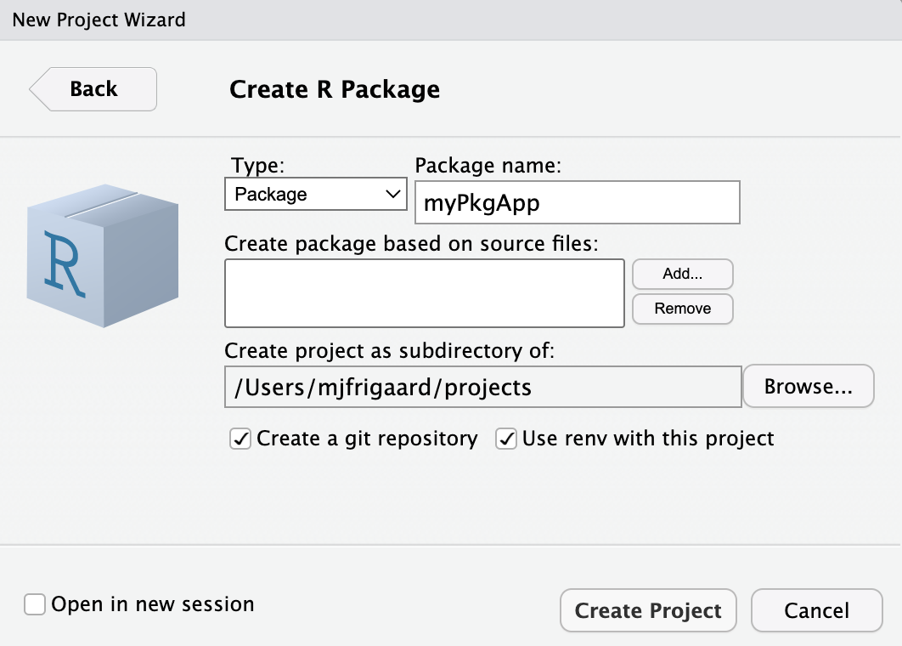
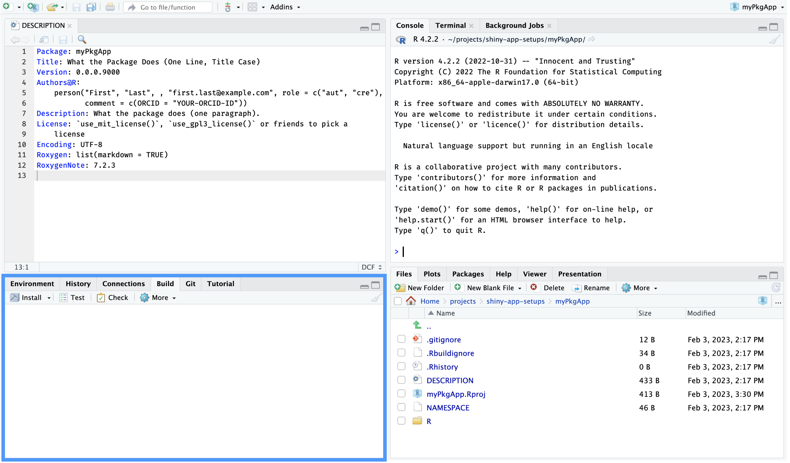
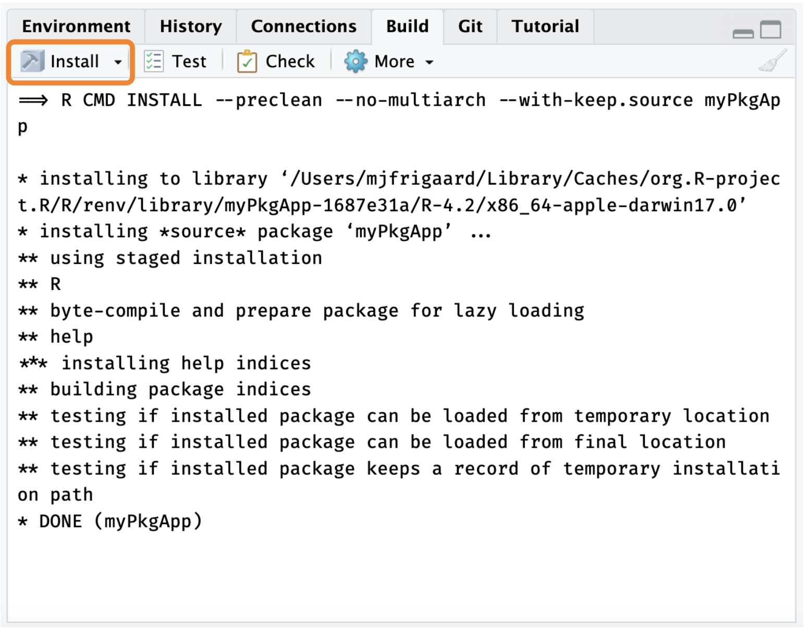
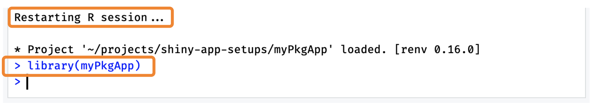
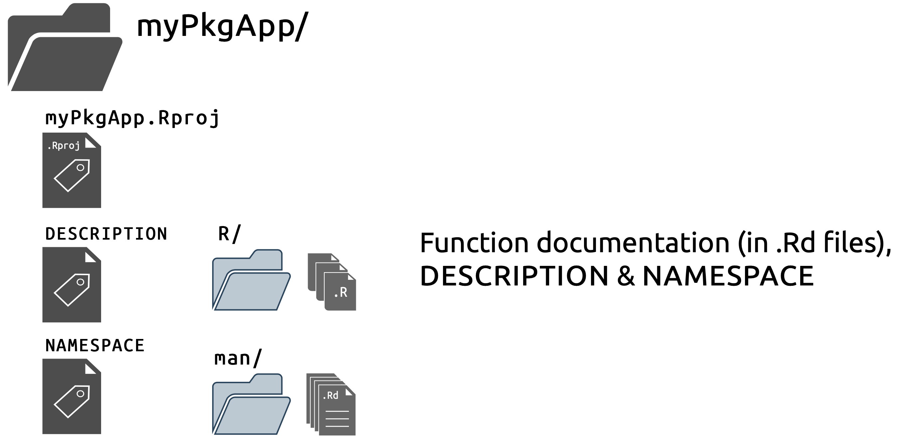
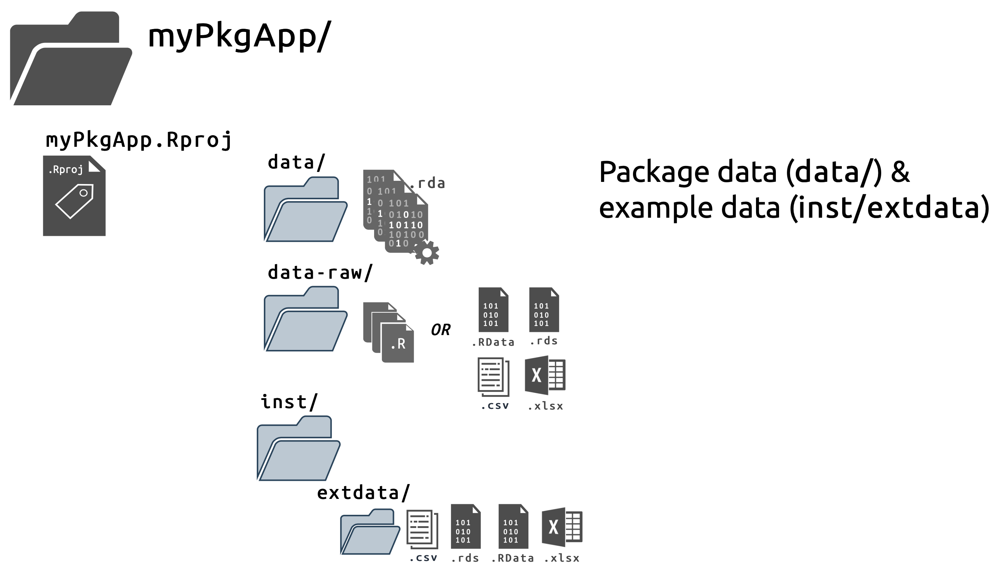
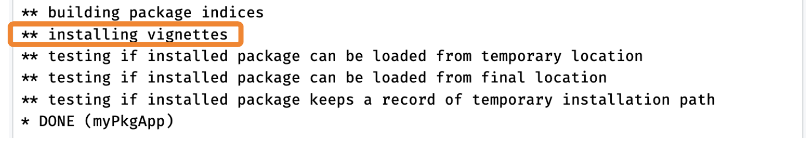
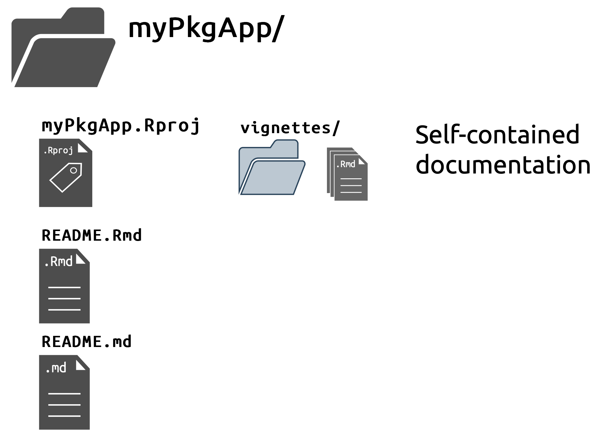
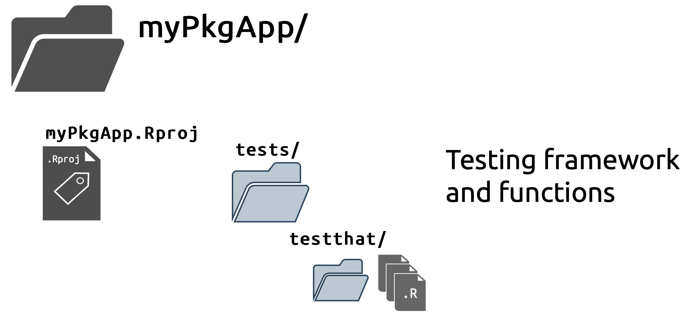
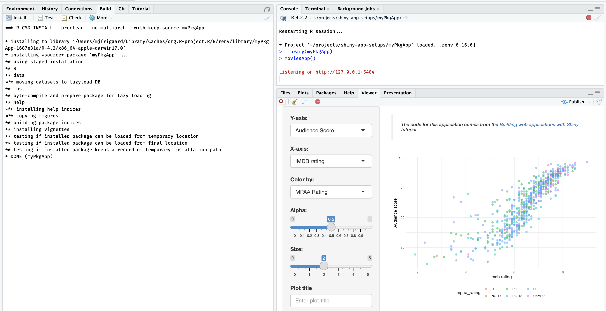

install.packages("devtools")
library(devtools)Shiny frameworks (part 2, usethis & devtools)
shiny
code
packages
This is the second post in my series on shiny application frameworks. In this post, I’ll build a shiny app using two package-development packages (usethis and devtools). The result is myPkgApp, an R package that contains a shiny application.
Framework comparisons
I’m still going to focus on three technical areas: Start, Build, and Use.
Start covers the steps required to begin building a shiny app with the framework (from the console and IDE), and any additional packages or dependencies.
Build covers the development process, which includes writing and storing code, data, external resources (like CSS or JavaScript), testing, etc.
Use shows how developers can launch their application using the given framework/package locally (i.e., within the RStudio (Posit) IDE), common workflow tips, and anything that might be confusing while converting the application to a package.
The GitHub repo with all shiny apps here.
myPkgApp
Building a shiny app as a package is highly recommended. Both the golem and leprechaun frameworks convert your shiny application into an R package, and while this might seem like overkill, when you consider the additional development tools accessible to R packages, I think you’ll see why the advice makes sense. I’ll use the application code from VanillaApp as an example to demonstrate.
Start
To create a shiny app package, I install devtools (which also installs usethis).
If I am creating a package from the console, the function for building a new package is usethis::create_package():
usethis::create_package(path = "myPkgApp")A new RStudio session will open (and the name of the project–i.e., the name of the .Rproj file–will be identical to the package name).
If I am using RStudio’s New Project Wizard to create a new shiny app package, I’d see the following defaults:

usethis::create_package project setupThe new package built from the console will have the following folder and files:
myPkgApp/
├── DESCRIPTION
├── NAMESPACE
├── R/
└── myPkgApp.Rproj
1 directory, 3 filesPackages built from the New Project Wizard will have a few additional folders and files:
myPkgApp/
├── DESCRIPTION
├── NAMESPACE
├── R/
│ └── hello.R
├── man/
│ └── hello.Rd
├── myRPkg.Rproj
└── renv/
├── activate.R
├── sandbox/
│ └── R-4.2
└── settings.dcf
4 directories, 7 filesThese additional files are:
-
hello.Rin theR/folder
-
hello.Rdin theman/folder
- a
renv/folder for package management
R/hello.R and man/hello.Rd are boilerplate files and can be deleted, but both package setups have a DESCRIPTION, NAMESPACE, R/ folder, and .Rproj file. These four items can be thought of as the ‘minimal package’ setup required to access RStudio’s Build tools.
Build
The workflow when developing R packages is well documented elsewhere and slightly more involved than working in a single app.R file. However, the additional steps force better habits (and prevent having to rebuild your application entirely from scratch).
I’ll work through a ’minimum viable product (MVP) using the app code in VanillaApp
DESCRIPTION
The DESCRIPTION file plays an important role in R packages–that’s why creating this file is the first step when converting an existing app (and when creating a new golem apps).
The initial DESCRIPTION file in myPkgApp is below:
Package: myPkgApp
Title: What the Package Does (One Line, Title Case)
Version: 0.0.0.9000
Authors@R:
person("First", "Last", , "first.last@example.com",
role = c("aut", "cre"),
comment = c(ORCID = "YOUR-ORCID-ID"))
Description: What the package does (one paragraph).
License: `use_mit_license()`, `use_gpl3_license()` or friends to pick a
license
Encoding: UTF-8
Roxygen: list(markdown = TRUE)
RoxygenNote: 7.2.3The package name is automatically added, but the remaining fields need to be completed (consult R packages for more information on filling out the DESCRIPTION file).
The DESCRIPTION file in the myPkgApp prompts the RStudio IDE to activate the Build tools pane (see below):

use_r()
I’m going to create myPkgApp using modules to separate the app into the following digestible mental ‘chunks’:
The app collects the inputs in the
shiny::sideBar()These values are then used to create a plot in the
shiny::mainPanel()
Based on this functionality, I’ll create one module to collect and return the user-inputs (mod_var_input), and another module to display the plot (mod_display_plot).
I’ll create these files using usethis::use_r() below:
usethis::use_r("mod_var_input")✔ Setting active project to '/Users/mjfrigaard/projects/myPkgApp'
• Modify 'R/mod_var_input.R'
• Call `use_test()` to create a matching test fileusethis::use_r("mod_display_plot")• Modify 'R/mod_display_plot.R'
• Call `use_test()` to create a matching test fileThe display module also relies on a utility function (plot_points()), so I need to create a script for the utility function, which I put in a file with a name similar to the module it belongs to (i.e., utils_display_plot).
usethis::use_r("utils_display_plot")• Modify 'R/utils_display_plot.R'
• Call `use_test()` to create a matching test fileFinally, I’ll place the modules into basic ui and server arguments in a call to shiny::shinyApp():
usethis::use_r("moviesApp")• Modify 'R/moviesApp.R'
• Call `use_test()` to create a matching test fileModules consist of two functions; one in the UI (with a _ui suffix), and another in the server (with a _server suffix), but it’s common practice to combine them in a single file.
Below is the mod_var_input module:
-
The ui function is stored in
mod_var_input_ui:Click on Code to view the UI function in
R/mod_var_input/RCode
mod_var_input_ui <- function(id) { ns <- shiny::NS(id) shiny::tagList( shiny::selectInput( inputId = ns("y"), label = "Y-axis:", choices = c( "IMDB rating" = "imdb_rating", "IMDB number of votes" = "imdb_num_votes", "Critics Score" = "critics_score", "Audience Score" = "audience_score", "Runtime" = "runtime" ), selected = "audience_score" ), shiny::selectInput( inputId = ns("x"), label = "X-axis:", choices = c( "IMDB rating" = "imdb_rating", "IMDB number of votes" = "imdb_num_votes", "Critics Score" = "critics_score", "Audience Score" = "audience_score", "Runtime" = "runtime" ), selected = "imdb_rating" ), shiny::selectInput( inputId = ns("z"), label = "Color by:", choices = c( "Title Type" = "title_type", "Genre" = "genre", "MPAA Rating" = "mpaa_rating", "Critics Rating" = "critics_rating", "Audience Rating" = "audience_rating" ), selected = "mpaa_rating" ), shiny::sliderInput( inputId = ns("alpha"), label = "Alpha:", min = 0, max = 1, step = 0.1, value = 0.5 ), shiny::sliderInput( inputId = ns("size"), label = "Size:", min = 0, max = 5, value = 2 ), shiny::textInput( inputId = ns("plot_title"), label = "Plot title", placeholder = "Enter plot title" ) ) } -
The server function is stored in
mod_var_input_server:Click on Code to view the server function in
R/mod_var_input/RCode
mod_var_input_server <- function(id) { shiny::moduleServer(id, function(input, output, session) { return( list( "x" = shiny::reactive({ input$x }), "y" = shiny::reactive({ input$y }), "z" = shiny::reactive({ input$z }), "alpha" = shiny::reactive({ input$alpha }), "size" = shiny::reactive({ input$size }), "plot_title" = shiny::reactive({ input$plot_title }) ) ) }) }- View the display module here.
After I’ve written the modules and utility functions, I need to add these into the app file, R/moviesApp.R.
-
This file contains a call to
shiny::shinyApp()and includes the module functions (in their relative positions)- Note the
ids in each module function pair must match to create the shared namespace.
moviesApp <- function() { # call to shinyApp() shiny::shinyApp( # UI ---- ui = shiny::fluidPage( shiny::sidebarLayout( shiny::sidebarPanel( # UI input module ---- mod_var_input_ui("vars") ), # UI display module ---- shiny::mainPanel( mod_display_plot_ui("plot") ) ) ), server = function(input, output, session) { # server input module (capturing inputs) ---- selected_vars <- mod_var_input_server("vars") # server display module (rendering outputs) ---- mod_display_plot_server("plot", var_inputs = selected_vars) } ) } - Note the
roxygen2
When I’m confident my code works (and the app renders), I want to make sure these functions are properly documented by describing each function with roxygen2 tags. To quickly insert a roxygen2 skeleton, use the RStudio IDE (or the keyboard shortcut: Option + Shift + Command + R)
The standard roxygen2 skeleton tags include @param, @return, @export, and @examples
@paramlists the existing arguments (or variables) for the function@returnshould be a description of the object/side-effect/thing the function produces (and any warnings or errors if used incorrectly)
The following roxygen2 tags will be used to update the NAMESPACE file (which you should never edit manually!)
@exportwill make the function available to other people when they use your package-
@importFromvs.@import- it’s always a good idea to be explicit about the external functions and packages you’re using, so most of the time you should use
@importFrom(there’s even a handy helperusethis::use_import_from("package", "function"))
-
@importshould only be used when “you make such heavy use of so many functions from another package that you want to import its entire namespace. This should be relatively rare.”
- it’s always a good idea to be explicit about the external functions and packages you’re using, so most of the time you should use
roxygen2 imports and exports are covered in more depth in R packages..
You can see the full code for point_plot() below (or follow this link to view all the modules in the R/ folder):
Click on Code to view
Code
#' Plot points (shiny)
#'
#' @param df input dataset (tibble or data.frame)
#' @param x_var x variable
#' @param y_var y variable
#' @param col_var color variable
#' @param alpha_var alpha value
#' @param size_var size value
#'
#' @return plot object
#' @export point_plot
#'
#' @importFrom ggplot2 ggplot aes geom_point
#'
#' @examples
#' require(myPkgApp)
#' movies <- myPkgApp::movies
#' point_plot(df = movies,
#' x_var = "critics_score",
#' y_var = "imdb_rating",
#' col_var = "critics_rating",
#' alpha_var = 1/3,
#' size_var = 2)
#' }
point_plot <- function(df, x_var, y_var, col_var, alpha_var, size_var) {
ggplot2::ggplot(data = df,
ggplot2::aes(x = .data[[x_var]],
y = .data[[y_var]],
color = .data[[col_var]])) +
ggplot2::geom_point(alpha = alpha_var, size = size_var)
}load_all()
After documenting everything with roxygen2, I want to make sure none of the functions are in my Environment (remove with rm() if necessary) and load the functions with devtools::load_all().
devtools::load_all()ℹ Loading myPkgAppdocument()
The devtools::document() function will create the .Rd files in the man/ folder.
devtools::document()ℹ Updating myPkgApp documentation
First time using roxygen2. Upgrading automatically...
Setting `RoxygenNote` to "7.2.3"
ℹ Loading myPkgApp
Writing NAMESPACE
Writing mod_plot_ui.Rd
Writing mod_plot_server.Rd
Writing point_plot.Rd
Writing mod_var_input_ui.Rd
Writing mod_var_input_server.Rd
Writing moviesApp.RdIt’s important to understand that the roxygen2 tags are used to create the .Rd files in the man/ folder, and update the NAMESPACE, but devtools::document() does not update the Imports: section in the DESCRIPTION.
To add packages dependencies to the DESCRIPTION, you’ll need to use the usethis::use_package() function. Read more on this topic in Confusion about Imports.
The table below shows the connection between roxygen2 tags, the resulting NAMESPACE entry, and what should be listed in the DESCRIPTION.
install()
Now I want to make sure I can install the package with devtools::install()
devtools::install()── R CMD build ────────────────────────────────────────────────────────────────
✔ checking for file ‘/Users/mjfrigaard/projects/myPkgApp/DESCRIPTION’ ...
─ preparing ‘myPkgApp’: (1.8s)
✔ checking DESCRIPTION meta-information
─ checking for LF line-endings in source and make files and shell scripts (520ms)
─ checking for empty or unneeded directories
Omitted ‘LazyData’ from DESCRIPTION
─ building ‘myPkgApp_0.1.0.tar.gz’
Running /Library/Frameworks/R.framework/Resources/bin/R CMD INSTALL
--install-tests
* installing to library ...
* installing *source* package ‘myPkgApp’ ...
** using staged installation ...
** R
** byte-compile and prepare package for lazy loading
** help
*** installing help indices
** building package indices
** testing if installed package can be loaded from temporary location
** testing if installed package can be loaded from final location
** testing if installed package keeps a record of temporary installation path
* DONE (myPkgApp)
Restarting R session...
* Project '~/projects/myPkgApp' loaded. [renv 0.16.0]
library(myPkgApp)I can also use RStudio’s Build tools:

The Install icon in the Build pane is great, because installs the package, restarts the R session, and loads the package all with one click!

The sequence I’ve demonstrated above (create .R file, write function, document with roxygen2, load, document, install) is a ‘minimal version’ of the full development workflow. If possible, you should strive to adopt all of the steps. But I’ve found writing and documenting the modules and utility functions (and getting them working within a call to shinyApp()) is an acceptable trade-off to get an initial app up and running.
Once this ‘beta’ version of the app is deployed, I will come back to the app to refactor, write tests, and make sure all the items in devtools::check() pass.
Recap: the R/ folder
Storing the application’s code in the R/ folder and (using RStudio’s build tools) keeps files organized, well documented, and self-contained:
All the code is stored in the
R/folderI’ve separated my code into smaller pieces (modules) that can be tested independently (more on this later)
-
My dependencies are being managed by
roxygen2anddevtools::document(), which will update theNAMESPACEwith any functions tagged with@importFrom(or@import)- I can also access functions I’ve written outside by adding
@export
- I can also access functions I’ve written outside by adding

man/ folderNow that I have the R version/package management being tracked and stored with renv/ & renv.lock, function documentation in the .Rd files, the DESCRIPTION and NAMESPACE, I can move onto adding and using data in a shiny app package.
use_data_raw()
usethis::use_data() or usethis::use_data_raw() make it simple to add data to the application package:
usethis::use_data_raw("movies")✔ Creating 'data-raw/'
✔ Writing 'data-raw/movies.R'
• Modify 'data-raw/movies.R'
• Finish the data preparation script in 'data-raw/movies.R'
• Use `usethis::use_data()` to add prepared data to packageIn the data-raw/movies.R script, I want to import the movies.RData file, but where should I import it from? It depends. In R packages, data is stored in either data/ or data-raw/. To access a copy of the movies dataset in myPkgApp (i.e., with myPkgApp::movies), I can place the movies.RData file in data-raw/ and import it by adding the following to data-raw/movies.R:
## code to prepare `movies` dataset goes here
load("data-raw/movies.RData")
usethis::use_data(movies, overwrite = TRUE)Note data-raw/movies.R includes a call to usethis::use_data(), and when it’s executed, I can see a data/ folder is created and movies is saved as movies.rda:
✔ Adding 'R' to Depends field in DESCRIPTION
✔ Creating 'data/'
✔ Saving 'movies' to 'data/movies.rda'
• Document your data (see 'https://r-pkgs.org/data.html')inst/
The neat thing about the inst/ folder is that after we’ve loaded and installed our package, we can access the files in inst/extdata/ with the system.file() function:
fs::dir_tree( # wrap this in a folder tree
system.file("extdata", package = "myPkgApp"))/Users/mjfrigaard/Library/Caches/R/renv/library/myPkgApp-1687e31a/R-4.2/x86_64-apple-darwin17.0/myPkgApp/extdata
└── movies.RDataThe system.file() function will show me the path to the locally installed version of the package (hence the /Users/mjfrigaard/Library/ at the beginning of the path). The inst/exdata/ folder comes in handy for adding example data, but it’s also useful for application development (more on that later).
Recap: App data
R Packages have a consistent and standardized way of storing data, and have designated locations for internal and external data.

use_readme_rmd()
Function documentation is handled with the R/ folder and roxygen2 comments/tags, but myPkgApp needs a README file, and a place for long-form documentation. Fortuntely, RMarkdown handles each of these well:
-
I can create a
READMEfile usingusethis::use_readme_md()orusethis::use_readme_rmd()- I prefer the
.Rmdfile because it comes with executable code chunks.
usethis::use_readme_rmd()✔ Setting active project to '/Users/mjfrigaard/projects/myPkgApp' ✔ Writing 'README.Rmd' ✔ Adding '^README\\.Rmd$' to '.Rbuildignore' • Modify 'README.Rmd' • Update 'README.Rmd' to include installation instructions. ✔ Writing '.git/hooks/pre-commit'- When I knit
README.Rmd, it automatically generates theREADME.mdfor the package.
- I prefer the
use_vignette()
For long-form documentation I can use vignettes.
-
Vignettes can be created with
usethis::use_vignette()usethis::use_vignette("myPkgApp")✔ Adding 'knitr' to Suggests field in DESCRIPTION ✔ Setting VignetteBuilder field in DESCRIPTION to 'knitr' ✔ Adding 'inst/doc' to '.gitignore' ✔ Creating 'vignettes/' ✔ Adding '*.html', '*.R' to 'vignettes/.gitignore' ✔ Adding 'rmarkdown' to Suggests field in DESCRIPTION ✔ Writing 'vignettes/myPkgApp.Rmd' • Modify 'vignettes/myPkgApp.Rmd'
Vignettes are also written in RMarkdown and rendered whenever the package is built/installed.
myPkgApp/
└── vignettes/
└── myPkgApp.Rmd
1 directory, 1 fileBy combining rmarkdown and knitr, R packages have a documentation framework that has the added benefit of being somewhat fool-proof: vignettes have to successfully render for the package to be installed.

Recap: documentation
The vignettes folder will long-form documentation about how the application works, use cases, and features (and roxygen2 will document each function).

README and vignettes/use_testthat()
Testing is an important part of any package, and apps tend to require additional tests (especially when they’re moving from ‘development’ into ‘production’ environments).
To apply the testing framework provided by the testthat package. package, I’ll use usethis::use_testthat():
usethis::use_testthat()✔ Adding 'testthat' to Suggests field in DESCRIPTION
✔ Setting Config/testthat/edition field in DESCRIPTION to '3'
✔ Creating 'tests/testthat/'
✔ Writing 'tests/testthat.R'
• Call `use_test()` to initialize a basic test file and open it for editing.This creates a new tests/ folder, with a testthat/ sub-folder and script.
myPkgApp/
└── tests/
├── testthat/
└── testthat.R
2 directories, 1 fileWriting tests
testthat is designed for unit tests (i.e., testing each functional ‘unit’ in the code), but for shiny apps, we need to think beyond standard unit testing. We need to confirm the functions work and return predictable results, but we also need to make sure they play well with each other (integration tests), and that the application can be deployed (system tests).
Recap: testing
Testing is well described in the shiny documentation and in Mastering Shiny. Generally speaking, unit tests are performed with testthat, and module testing can be done with shiny::testServer(). To test the full application (or a specific behavior) use the shinytest2 package.

testthatUse
Using an app built as a package is similar to using any R function we’ve loaded from a package. After successfully loading, documenting, and installing the package, I can run the app by loading the myPkgApp (with library(myPkgApp)) and moviesApp():

myPkgApp::moviesApp()Recap
I’ve skipped over some development steps covered in R packages (license, using Git/GitHub, code coverage, NEWS, etc.), but hopefully you’ve seen that by building shiny apps as R packages unlocks a suite of developer tools (and a common structure).
myPkgApp the package holds the code, data, documentation, and includes explicit information on the dependencies and requirements (in the DESCRIPTION and NAMESPACE).
myPkgApp is a substantial improvement over VanillaApp. Next I’ll cover setting up a shiny application with golem.